IoT지식능력검정 (2016-05-22 기출문제)
1과목: 임의 구분
1. 다음 중 사물인터넷 개념과 가장 거리가 먼 것은?
- 최근 등장한 개념으로 단순히 물리 ㆍ 논리적으로 사물들을 연결하는 기술
- 네트워크에 사물들을 연결하고 지능화하여 사물의 가치를 증대
- 산업간 융합을 통한 지능화를 가속화하여 다양한 정보를 제공
- 사물들이 서로의 존재와 상태를 확인하고 새로운 가치를 생성
(정답률: 93%)

2. 다음 중 기술적 측면에서의 사물인터넷 활성화 요인으로 가장 적절한 것은?
- 제품의 대형화
- 디바이스의 고전력화
- 디바이스 및 소자의 저가격화
- 기술의 비표준화
(정답률: 77%)
3. 다음 중 사물인터넷을 활용한 헬스케어와 웰니스 서비스에 대한 설명으로 잘못 된 것은?
- 활동 추적 장치를 운동화에 부착하여 걷거나 달린 거리 및 속도, 소모한 칼로리 등의 확인
- 웨어러블 디바이스를 통한 다양한 생체 관련 데이터 측정
- 사용자 인식 기반의 스마트 스트리트(Street) 조성
- 실시간 수집된 개인의 건강정보를 과거의 데이터와 비교하여 알맞은 의료 서비스를 연결
(정답률: 90%)
4. 다음 중 가정 내 사물인터넷 서비스에 대한 설명으로 가장 거리가 먼 것은?
- 주방 ㆍ 생활용품, 헬스케어 디바이스 등이 와이파이나 블루투스, 지웨이브와 같은 다양한 근거리 무선통신을 통해 연결
- 메신저를 통해 보일러, 가스밸브 등을 원격에서 제어하거나 모니터링
- 가족 모두 잠을 자게 되면 전등이나 불필요한 전원을 차단하는 대신 보안 시스템을 가동
- 스마트폰을 활용한 음성 및 이미지 인식 기반의 상품 주문
(정답률: 80%)
5. 다음 서비스 중 스마트시티(Smart City) 서비스와 가장 거리가 먼 것은?
- 실시간 교통상황 및 주차장 정보 제공
- 스마트 쓰레기통 수거
- 하천 범람 알림
- 운전자의 운전 정보 보험사 제공
(정답률: 92%)
6. 다음 중 사물인터넷 디바이스들을 연결하기 위한 요구사항 및 상호 운용성을 보장하기 위한 기업들 간의 표준화 단체는 무엇인가?
- OIC (Open Interconnect Consortium)
- oneM2M
- AllSeen Alliance
- ISO/IEC JTC1
(정답률: 62%)
7. 아래 그림은 SPNDSe 관점에서의 사물인터넷 구조이다. 다음 중 ( )에 들어갈 적절한 용어는 무엇인가?
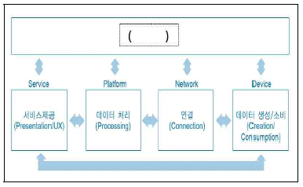
- 보안
- 운영
- 관리
- 웹
(정답률: 80%)
8. oneM2M의 레퍼런스 아키텍처 모델의 기본 계층 모델에서는 모든 엔티티를 3가지 계층에서 분화하여 언급하고 있다. 3가지 계층과 거리가 먼 것은?
- 애플리케이션 계층 (Application Layer)
- 공통 서비스 계층 (Common Services Layer)
- 네트워크 서비스 계층 (Network Services Layer)
- 데이터 링크 계층 (Data Link Layer)
(정답률: 74%)
9. 다음 그림은 IoTivity의 프레임워크 API 이다. ( )안에 들어갈 적절한 용어는 무엇인가?
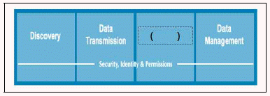
- Communication
- Device Management
- Data Action
- Data Interface
(정답률: 73%)
10. 사물인터넷의 구성요소별 보안 위협의 종류 중 서비스와 관련된 보안 위협으로 거리가 먼 것은?
- 데이터의 기밀성/무결성
- 프라이버시 침해
- 복제 공격
- 데이터 위ㆍ변조
(정답률: 62%)
11. 다음 중 강력한 보안체계를 갖추기 때문에 발생할 수 있는 사물인터넷 디바이스의 제한적인 요소로 가장 거리가 먼 것은?
- 저용량 배터리나 낮은 컴퓨팅 파워를 이용할 수 없음
- 데이터 전송과 관련한 경량 암호 알고리즘의 부재
- 매시업 보안 기술의 부재로 인한 프라이버시 보호가 어려움
- 일관된 방식으로 보안 및 프라이버시 보장이 어려움
(정답률: 70%)
12. 사물인터넷 보안 공격 중 다음에서 설명하는 것은 무엇인가?
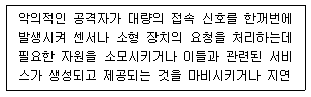
- 서비스 거부
- 비인가 접근
- 프라이버시 침해
- 데이터 위ㆍ변조
(정답률: 72%)
13. 다음 중 사물인터넷 플랫폼의 대표적인 기능 블록 중, 리소스 및 서비스 관리 기능 블록에 대한 설명과 거리가 먼 것은?
- 사물 디바이스의 등록, 설정, 모니터링, 펌웨어 다운로드 등의 디바이스 관리 기능
- 사물의 리소스(프로파일, 위치정보, 수집 데이터, 제어기능 등)에 대한 생성, 제공, 갱신, 삭제 등의 리소스 관리 기능
- 다양한 디바이스, 리소스, 서비스 들에 대한 검색 기능을 제공하는 디스커버리 기능
- 데이터에 대한 고차원적 분석을 통한 서비스를 제공하기 위한 데이터 분석 기능
(정답률: 57%)
14. 다음 중 사물인터넷 플랫폼을 구성하는데 반드시 필요한 핵심 기능(Core Functions)에 해당되지 않는 것은?
- 클라우드 지원 기능
- 시맨틱 및 지식 기능
- 보안 및 프라이버시 기능
- 커넥티비티 관리 기능
(정답률: 71%)
15. 사물인터넷 플랫폼 기술 중 다음이 설명하고 있는 것으로 가장 적절한 것은?
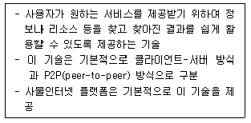
- 사물 가상화 기술
- 검색 기술
- 장치관리 기술
- 식별체계 기술
(정답률: 87%)
16. 사물인터넷 장치관리 기술 중 이동통신사에서 휴대폰을 원격 제어/관리하고자 하는 목적으로 장치관리 기능이 MO(Management Objet) 기반 자원으로 구현되어 HTTP를 이용한 REST 기반의 프로토콜로 동작하는 것은?
- BBF(Broadband Forum)의 TR-069
- BBF(Broadband Forum)의 WT-131
- OMA(Open Mobile Alliance)의 LWM2M(Lightweight M2M)
- OMA(Open Mobile Alliance)의 DM(Device Management)
(정답률: 80%)
17. 다음 중 사물인터넷 플랫폼 기술의 하나인 시맨틱 기술을 구현하는데 필요한 기술과 거리가 먼 것은?
- 온톨로지 표현 기술
- 시맨틱 주석화 기술
- 데이터 표현 기술
- 서비스 오케스트레이션 기술
(정답률: 65%)
18. 다음은 국내에서 개발된 사물인터넷 플랫폼 사례 중 하나에 대한 설명이다. 다음에서 설명하고 있는 플랫폼은 무엇인가?
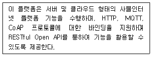
- 모비우스 (Mobius)
- 앤큐브 (&Cube)
- 씽플러스 (Thing+)
- 코뮤스 (Comus)
(정답률: 79%)
19. 다음 중 사물인터넷 디바이스의 주소 체계로 사용될 IPv6에 대한 설명으로 가장 적절한 것은?
- 32비트 주소 체계를 사용하므로 약 43억개 주소를 가진다.
- OSI 7계층 중 전송계층에 속하는 프로토콜이다.
- IPv6의 주소체계 부족의 근본적인 해결책은 사설 주소와 NAT의 적극 활용이다.
- 저전력 무선 근거리 통신기술의 무선 프레임안에 수용하는 노력을 수행중이다.
(정답률: 46%)
20. 다음 중 사물인터넷 통신 기술로 와이파이가 많이 사용되는 이유로 가장 거리가 먼 것은?
- 저전력으로 동작하므로 전력공급이 어려운 장소에 설치되는 비콘 등에 널리 사용될 수 있다.
- 여러 표준 제공을 통해 다양한 통신 환경을 지원한다.
- 다양한 개인 휴대장치에서 기본으로 지원하여 디바이스들이 인터넷에 접속하는데 필요한 AP가 널리 퍼져 있다.
- 다른 근거리 무선 통신 기술들보다 더 빠른 통신속도를 제공한다.
(정답률: 64%)
21. 다음 중 블루투스 기술에 대한 설명으로 거리가 먼 것은?
- 블루투스 4.1에 비해 블루투스 4.2의 전송속도가 최대 2.5배 빠르다.
- 블루투스 4.0의 저전력 기술(BLE)을 도입하여 비콘디바이스의 전력 문제를 해결할 수 있다.
- 블루투스는 메시 네트워크 기반으로 개발되었고, 최근에 중앙의 데이터 허브를 통해 연결하는 네트워크 기술을 표준화하고 있다.
- 블루투스 4.2부터 인터넷 프로토콜(IP)을 지원하고 이를 통해 블루투스를 지원하는 센서나 디바이스가 직접 인터넷에 접속할 수 있다.
(정답률: 64%)
22. 다음 중 BLE 비콘에 대한 설명으로 가장 거리가 먼 것은?
- RFID나 NFC와 비교하여 서비스 영역은 짧지만 계층화된 서비스 제공이 용이하다.
- UUID, major, minor 값을 이용하거나 수신신호세기(RSSI)를 이용하여 계층화된 서비스가 가능하다.
- 애플의 아이비콘의 경우 안드로이드 5.0(Lollipop)을 지원하는 스마트폰부터는 아이비콘 신호 수신과 송신이 가능하다.
- 용량이 620mAh인 CR2450 수은전지 하나만으로 최대 2년 이상 동작할 수 있다.
(정답률: 59%)
23. RFID 기술 중 센서 네트워크 통신 기술과 적용 영역이 유사한 기술은 무엇인가?
- ISO/IEC 18000-6 (860~960MHz)
- ISO/IEC 18000-7 (433MHz)
- ISO/IEC 18000-3 (13.56MHz)
- ISO/IEC 18000-4 (2.45GHz)
(정답률: 63%)
24. 다음 중 NFC에서 지원하는 모드에 대한 설명으로 거리가 먼 것은?
- 두 대의 NFC 디바이스가 상호 데이터 송수신이 가능하다.
- RFID 태그를 인식하기 위한 리더로 동작한다.
- 기존의 RFID 카드처럼 동작한다.
- 센서 네트워크의 게이트웨이 역할을 수행한다.
(정답률: 68%)
25. 다음 중 ZigBee IP에 대한 설명으로 가장 거리가 먼 것은?
- 에너지관리용 응용 프로파일을 수용하기 위해 발표된 프로토콜 스택이다.
- 6LoWPAN과 RPL 라우팅 메커니즘을 포함한다.
- IPv4 기반 무선 메쉬 네트워킹을 지원한다.
- 인터넷 수송 계층의 보안 메커니즘인 TLS, DTLS를 포함한다.
(정답률: 60%)
2과목: 임의 구분
26. 다음 중 Z-wave에 대한 설명으로 가장 거리가 먼 것은?
- 네트워크 토폴로지 측면에서 마스터 노드를 기반으로 232대의 디바이스가 연결될 수 있다.
- 투과성이 좋아 벽이 하나 있어도 30m 정도의 거리통신이 가능하다.
- Wi-Fi, Bluetooth, ZigBee 등이 사용하는 2.4GHz 주파수와 다른 주파수를 사용하여 간섭에 자유롭다.
- 홈오토메이션의 모니터링과 컨트롤을 위한 저전력통신 기술이다.
(정답률: 65%)
27. 다음 중 근거리 통신망 기술로서 초당 400~500Mbit 까지 전송이 가능한 저전력 고속 무선 통신기술로서 IEEE 801.15.3에서 표준화를 진행하고 있는 기술은 무엇인가?
- WirelessHART
- ISA100a
- ZigBee
- UWB
(정답률: 68%)
28. 다음 와이파이(Wi-Fi) 관련 표준 중에서 가장 빠른 통신 속도를 제공하는 것은?
- IEEE 802.11ad
- IEEE 802.11b
- IEEE 802.11g
- IEEE 802.11n
(정답률: 73%)
29. 다음은 저전력 블루투스(BLE)에 대한 설명이다. ( )에 들어갈 내용으로 적절한 것은?
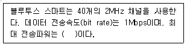
- 10mW
- 1mW
- 50mW
- 100mW
(정답률: 78%)
30. 다음 중 사물인터넷 프로토콜로 메시지 교환방식으로 Publish/Subscribe 방식과 Request/Response 방식을 지원하는 것은?
- HTTP (HyperText Transfer Protocol)
- XMPP (Extensible Messaging and Presence Protocol)
- MQTT (Message Queue Telemetry Transport)
- CoAP (Constrained Applilcation Protocol)
(정답률: 61%)
31. 다음 중 CoAP (Constrained Application Protocol)에 대한 설명으로 가장 거리가 먼 것은?
- 저사양 하드웨어에서 작동하는 센서 디바이스의 RESTful 웹서비스를 지원하기 위한 경량 프로토콜로 개발되었다.
- 네트워크 계층은 IEEE 802.15.4 표준으로 기반으로 하고, 물리 계층 및 링크 계층은 IPv6 프로토콜을 이용한다.
- 저전력, 고손실 네트워크 및 소용량, 소형 노드에 사용될 수 있는 특수한 웹 전송 프로토콜이다
- 메시지 전달 타입은 확인형, 비확인형, 승인, 리셋으로 정의된다.
(정답률: 50%)
32. 최근 마케팅 분야에서 사물인터넷 서비스의 대표적인 사례가 비콘을 활용하여 프로모션 정보 제공, 할인 쿠폰 제공, 매장 내 길안내, 제품 정보 제공 등 스마트 쇼핑 서비스를 꼽을 수 있다. 다음 중 비콘의 기반 통신 기술은 무엇인가?
- 지그비 (ZigBee)
- 지웨이브 (Z-Wave)
- 저전력 블루투스 (BLE)
- 와이파이 (Wi-Fi)
(정답률: 68%)
33. 다음 중 오픈소스 하드웨어 결과물로 가장 거리가 먼 것은?
- PCB 도면
- 자재명세서 (BOM, Bill of Materials)
- 회로도
- 펌웨어 (Firmware)
(정답률: 80%)
34. 다음 중 사물인터넷 디바이스 하드웨어로 라즈베리파이 (Raspberry Pi)에 대한 설명으로 가장 거리가 먼 것은?
- 아두이노와 달리 동영상 카메라를 어려움 없이 적용할 수 있다.
- 라즈베리파이 제품군은 리눅스 OS를 장착할 수 있다.
- 카메라 기능이 기본으로 탑재되어 있다.
- 라즈베리파이 제품군은 센서, 엑추에이터 등 다양한 디바이스 기능을 구현할 수 있다.
(정답률: 72%)
35. 다음에서 설명하는 센서는 무엇인가?
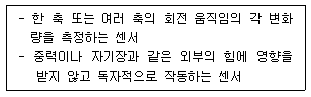
- 자이로 센서
- 중력 센서
- 지자기 센서
- 선형 가속도 센서
(정답률: 78%)
36. 다음에서 설명하는 기술은 무엇인가?
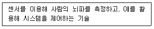
- VR (Virtual Reality)
- BCI (Brain Computer Interface)
- AI (Artificial Intelligence)
- NT (Nano Technology)
(정답률: 82%)
37. 다음 내용에서 ( )안에 들어갈 적절한 용어는 무엇 인가?
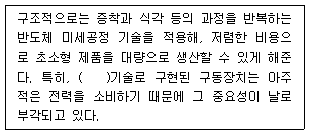
- Nano
- MindWave
- Micro Electro Mechanical Systems
- RealSense
(정답률: 77%)
38. 다음 중 TinyOS에 대한 설명으로 가장 거리가 먼 것은?
- 오픈 소스 BSD 라이센스 운영체제이다.
- 센서와 네트워크 기능을 동시에 갖춘 마이크로 컨트롤러 기반의 단일 보드기기에 사용은 어렵다.
- 개발 언어가 TinyOS 전용인 NetC로 개발되어 그 확장성이 다른 일반 개발언어에 비해 한계가 있다.
- 저전력 무선 통신기능을 중심으로 하는 OS 이다.
(정답률: 54%)
39. 다양한 종류의 데이터들이 빅데이터를 구성하고 있다. 다음에서 설명하는 데이터로 가장 적절한 것은?
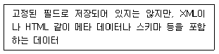
- 정형 (Structured) 데이터
- 반정형 (Semi-Structured) 데이터
- 비정형 (Unstructured) 데이터
- 사건 (events) 데이터
(정답률: 75%)
40. 빅데이터는 기존 데이터에서는 얻을 수 없었던 속성을 얻을 수 있기 때문에 적절하게 수집하고 분석하는 일이 중요하다. 다음에서 설명하는 알고리즘으로 가장 적절한 것은?
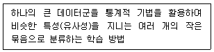
- 연관규칙 학습 (Association Rule Learning)
- 분류 (Classification)
- 회귀분석 (Regression)
- 군집화 (Clustering)
(정답률: 66%)
41. 다음 내용에서 ( )안에 들어갈 가장 적절한 용어는 무엇인가?
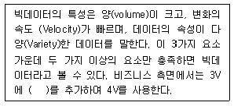
- 유효성 (Validity)
- 진실성 (Veracity)
- 가치 (Value)
- 가시성 (Visibility)
(정답률: 80%)
42. 다음에서 설명하는 기술은 무엇인가?
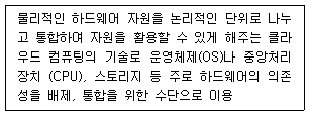
- 가상화
- 분산처리
- 시스템 관리
- 프로비저닝 (Provisioning)
(정답률: 57%)
43. 다음에서 설명하는 프로토콜은 무엇인가?
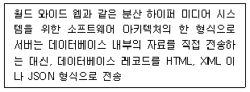
- SOA (Service Oriented Architecture)
- SOAP (Simple Object Access Protocol)
- REST (Representational State Transfer)
- 하이퍼바이저 (Hypervisor)
(정답률: 67%)
44. 클라우드 서비스는 제공하는 자원의 레벨에 따라 다양한 모델로 구분된다. 다음에서 설명하는 모델은 무엇인가?
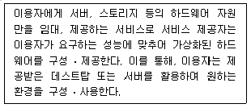
- IaaS (Infrastructure as a Service)
- PasS (Platform as a Service)
- SaaS (Software as a Service)
- HaaS (Hardware as a Service)
(정답률: 69%)
45. 클라우드 환경에서 예상되는 다양한 보안 위협들 중 시스템 자원을 통합, 재분배 하여 제공하는 인프라계층의 특징으로 인해 발생하며, 하이퍼바이저 감염 시게스트 OS로 확산되는 보안 위협은 무엇인가?
- 가상화 취약점 상속
- 자원 공유 및 집중화에 따른 서비스 장애
- 분산처리에 따른 보안적용의 어려움
- 정보위탁 및 사용단말에 따른 정보 유출
(정답률: 66%)
46. 다음 중 연결 중심의 사물인터넷 시대 주요 변화에 대한 설명으로 가장 거리가 먼 것은?
- 더 많은 사물들을 연결하려면 지금의 기기 중심의 스마트 기능 추가보다는 소비자들에게 불필요한 컴퓨팅 기능을 없애는 등 연결 관점에서 제품을 제공하는 고민이 필요할 것이다.
- 사물인터넷을 중심으로 한 가벼운 연결이 기하급수적으로 증가하면서 무거운 연결의 데이터 트래픽을 뛰어 넘는 환경이 될 것으로 예상된다.
- 사물들이 인터넷에 연결되어 서비스 되기 때문에 스마트폰 중심의 OS에 대한 종속성이 높아질 것이다.
- 향후에는 웹 중심 환경으로 전환될 것이므로 웹 표준 기반 기술로 만들어진 웹 API가 더 확대될 것이다.
(정답률: 57%)
47. 다음 중 모바일 시대와 사물인터넷 시대가 알맞게 짝지어진 것은?
- 모바일 시대 : 가벼운 연결, OS 중심, 웹 경제
- 모바일 시대 : 무거운 연결, 웹 중심, API 경제
- 사물인터넷 시대 : 가벼운 연결, 웹 중심, API 경제
- 사물인터넷 시대 : 무거운 연결, OS 중심, 앱 경제
(정답률: 75%)
48. 다음 중 IT생태계의 건강성과 경쟁력을 측정하는 평가 지표 중 하나로, 다양한 시장의 요구에 적극적으로 대처하기 위해 새롭게 등장한 기술을 수용해서 다양한 비즈니스나 제품에 흡수되어 나타나도록 하는 능력을 무엇이라 하는가?
- 강건성
- 생산성
- 혁신성
- 연결성
(정답률: 59%)
49. 다음 중 비즈니스 모델이 어떻게 가치를 창출하고 전파하여 이로 인해 수익으로 발생되어지는 흐름을 도면상에 보여 주기 위해 아홉 가지 고려 대상인 블록으로 구성된 집합체를 제시한 비즈니스 모델은?
- TISSUE 모델
- 비즈니스 모델 캔버스
- 5-Force 모델
- 균형성과관리 (Balanced Score Card)
(정답률: 63%)
50. 다음 중 사물인터넷 비즈니스 모델 구축에 적용될 TISSUE 분석 모형의 구성에서 분석관점으로 가장 거리가 먼 것은?
- 기술
- 산업
- 전략
- 비용
(정답률: 75%)